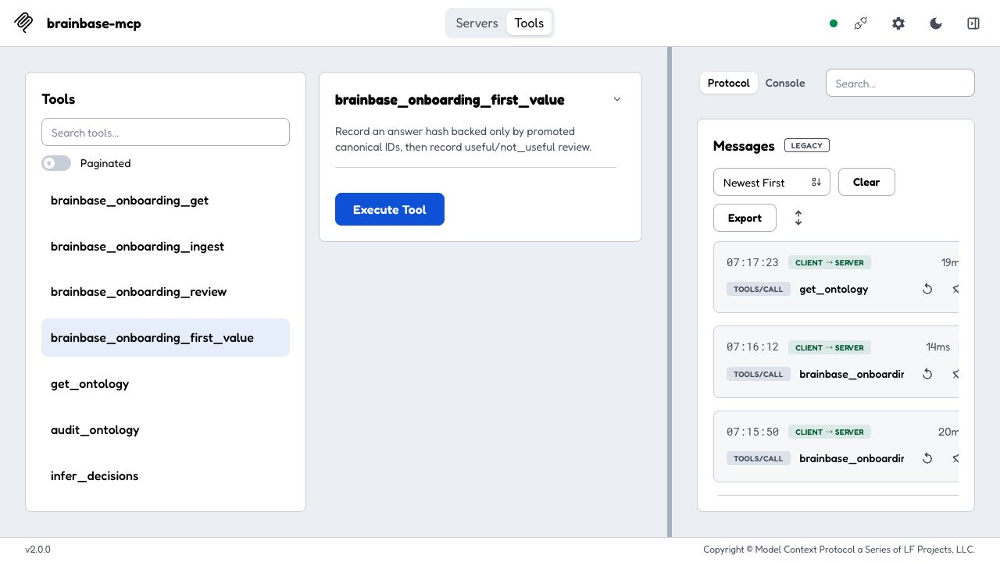
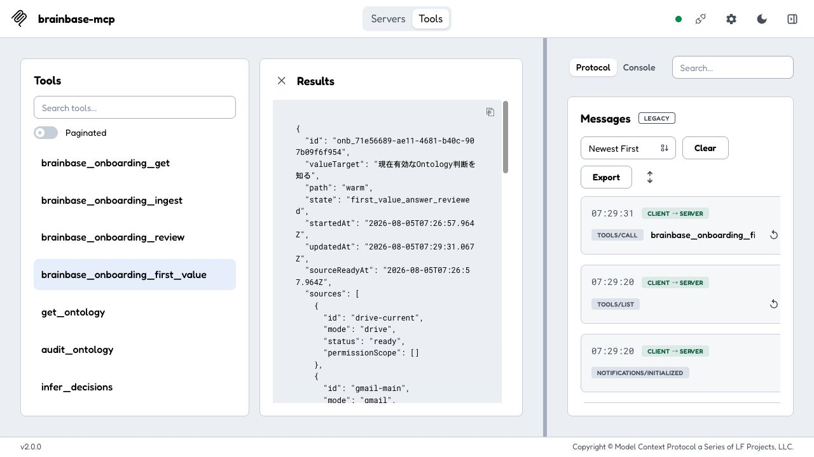

旧 Round 1
自動契約 128 / 128成功
runIdの名称統一とDecision意味フィールド保持など、コード契約上の不足を扱った。個別の初心者意見は0件。
UXは未判定
BRAINBASE / ONBOARDING & ONTOLOGY 1.0.0
何が分かりにくかったのか、どの意見を採用したのか、修正後にどこまで安心して使えると判断したのかを、日本語でまとめたレポートです。
旧4ラウンドは同じコードに対する自動契約評価でした。各ラウンドで32枠×4タスク＝128件が成功しましたが、実画面を操作していないため、初心者の意見や迷いは収集できていません。
runIdの名称統一とDecision意味フィールド保持など、コード契約上の不足を扱った。個別の初心者意見は0件。
新しい自動検出は0件。実画面・実利用者の証拠は未収集。
新しい自動検出は0件。初心者が次の操作を理解できるかは未確認。
新しい自動検出は0件。4ラウンドを終えても、人間向けUXは未収束と判断した。
| 段階 | 初心者視点の意見 | 判断 | 行った修正 | 結果 |
|---|---|---|---|---|
| 実画面・初回 | 入力欄が表示されず、最終工程を始められない | 採用 | 公開スキーマを平坦化し7項目を表示 | 実画面で入力可能 |
| 実画面・初回 | 成功後に、次にどのツールを使うか分からない | 採用 | nextActionにツール・説明・必要IDを追加 | 次の操作を画面で判断可能 |
| 実画面・初回 | 推論候補を承認できないと、行き止まりになる | 採用 | 人が確認したeditまたはrejectを案内 | 安全な復旧経路を確認 |
| 実画面・初回 | オントロジーの詳細が先に出て、全体像がつかめない | 採用 | 1文説明と5要素の初心者ガイドを先頭に追加 | 詳細の前に全体像を確認 |
| 修正後・再操作 | 画面が前操作の値を残すと、正しい最終操作が失敗する | 採用 | 不要な残留項目を受け止め、実行前に除去 | first_value_answer_reviewedまで完了 |
| 初心者視点 | 評価数 | オンボーディング完了 | オントロジー理解 | 両方成功 |
|---|---|---|---|---|
| 初回利用者 | 8 | 8 / 8 | 8 / 8 | 8 / 8 |
| チーム運用担当 | 8 | 8 / 8 | 8 / 8 | 8 / 8 |
| オントロジー管理担当 | 8 | 8 / 8 | 8 / 8 | 8 / 8 |
| エラー復旧重視 | 8 | 8 / 8 | 8 / 8 | 8 / 8 |
| 合計 | 32視点 | 32 / 32 | 32 / 32 | 32 / 32 |

